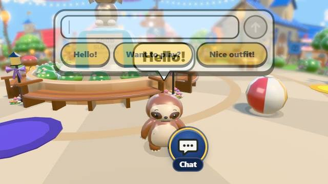

Safe online games for children
A parent’s checklist · October 2026
“Online” can mean two things for a child’s game: played in a web browser, or played with other people over the internet. The second brings most of the risks. Here are the questions worth asking about any game, and how Sloth Jam answers each one.

1. Can my child talk to strangers?
Look for whether the game has open chat, voice chat, friend search or public lobbies.
Sloth Jam: online play is off until a grown-up turns it on behind the grown-ups lock. With it off, your child plays against kind computer players, or with family on the same device. With it on, other families’ sloths share the town, but everyone has a made-up name, chat is kind words from a short list, and friends join by a picture code, never by searching.
2. Can my child type anything?
Free typing is how names, ages, schools and phone numbers slip out.
Sloth Jam: chat is a short list of kind words to pick from. Sloth names come from a word list too. No names, ages or numbers can get through.
3. Who makes the account?
A child should never have to type an email or make a password.
Sloth Jam: a grown-up makes the family account with a code sent by email, never a password. A child never signs up.
4. Is there gambling for kids?
Loot boxes and paid random rewards teach the habits of a slot machine.
Sloth Jam: no loot boxes, no random paid rewards, and never pay to win. A parent gate sits in front of every code or real-money screen. The game has no ads.
5. Does the game pressure my child to come back?
Streaks that break, timers and “today only” offers are built to make a child anxious about stopping.
Sloth Jam: no streaks, no limited-time offers. Nothing is ever taken away. Each party game lasts one minute, so stopping is easy.
6. What data does it collect?
Read the privacy policy, or look for a short summary.
Sloth Jam: the game has no tracking, no cookies and no ads. It is built to follow COPPA. The one-page privacy summary for schools lists exactly what it sends, and the full privacy policy has the rest.
Who is behind it
Sloth Jam is made by Remi Couture, who started at Disney on Club Penguin and has since worked on more than 13 children’s apps. The person who wrote these promises answers your email: hello@slothjam.com.